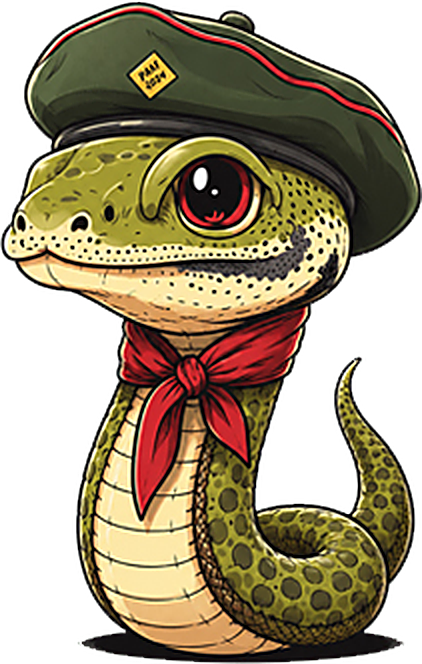

Animation Studio by Stanley Kobrick
Short wordless animated films made with AI tools and code. Our first film: A Ginger Story — He Waited For Her.
YouTube channel: Stanley Kobrick
Kobrick YouTube app
“Kobrick YouTube” is a private tool used only by the channel owner to manage the Stanley Kobrick YouTube channel (video titles, descriptions, thumbnails, playlists and channel statistics) through the YouTube Data API and YouTube Analytics API.